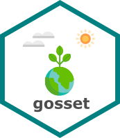

gosset: Tools for Data Analysis in Experimental Agriculture 
Overview
The gosset package provides the toolkit for a workflow to analyse experimental agriculture data, from data synthesis to model selection and visualisation. The package is named after W.S. Gosset aka ‘Student’, a pioneer of modern statistics in small sample experimental design and analysis.
Installation
The stable version is available through CRAN.
install.packages("gosset")The development version can be installed via
library("remotes")
remotes::install_github("agrdatasci/gosset")Going further
The full functionality of gosset is illustrated in the package website
Meta
- Please report any issues or bugs.
- License: MIT
- Get citation information for gosset in R by typing
citation(package = "gosset"). - You are welcome to contribute to the gosset project. Please read our contribution guide lines.
- Please note that the gosset project is released with a Contributor Code of Conduct. By participating in the gosset project you agree to abide by its terms.